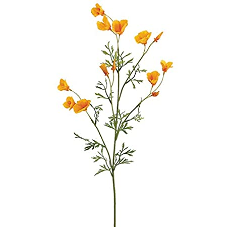
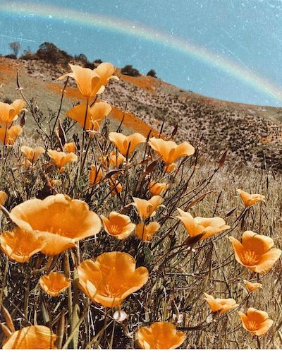

The California poppy is the state flower of California. Discorved in 1816, Adelbert von Chamisso found and named the species. California poppies are easy to grow, and enjoy wetter climates. The flowers close their petals each night, and on cloudy days. It is also used alone or in combination with other herbs for anxiety, trouble sleeping, aches and many other conditions. However, there is no good scientific evidence to support their uses. Fun Fact: It is not illegal to pick a California Poppy(although it is not condoned by me!)
 